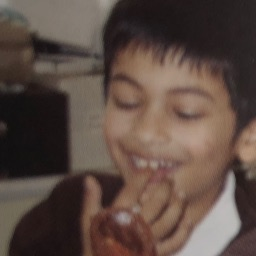

I am a 6th-Form student from South-East England, and I'm interested in low-level and embedded programming, graphics engineering, mathematics and philosophy. I am also a senior lighting technican and a tutor.
My favourite poem is I'm Nobody by Emily Dickinson. My favourite author and philosopher is Albert Camus, and my favourite film is Fantastic Mr Fox (directed by Wes Anderson).
Email me at justfahoom@gmail.com